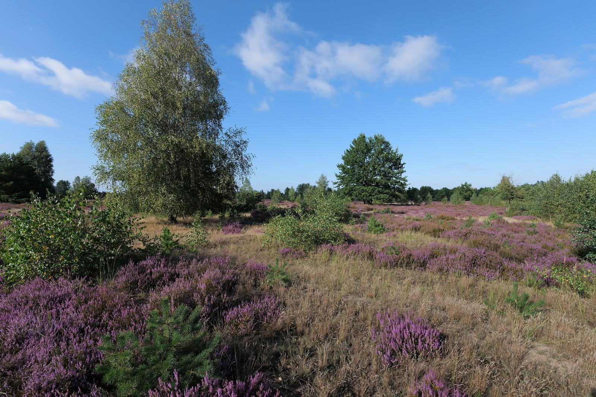
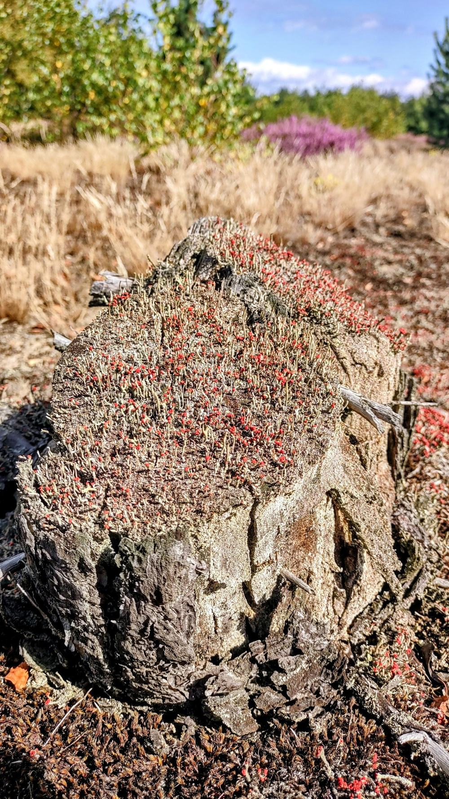
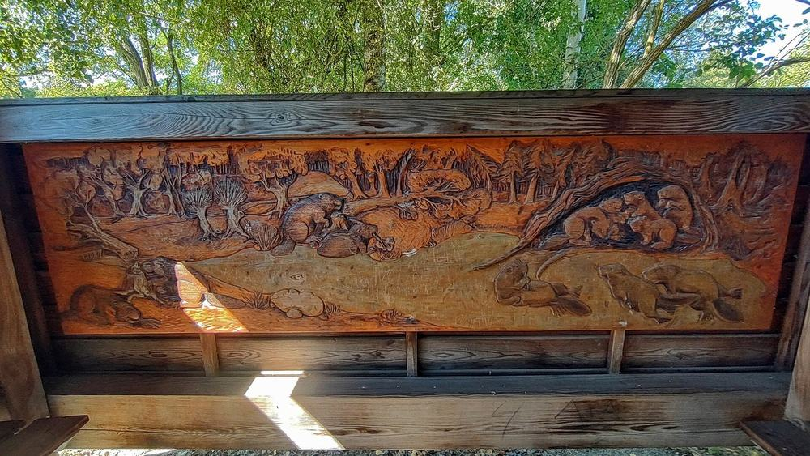

Foto: Derbrauni, CC BY 4.0, via Wikimedia Commons

Wildnisgebiet Königsbrücker Heide · NSG Gohrischheide
Herzlich willkommen in der Wildnis
Die Königsbrücker Heide nördlich von Dresden und die Gohrischheide bei Riesa waren über Jahrzehnte Truppenübungsplätze. Heute darf sich dort die Natur weitgehend ungestört entwickeln. Hier finden Sie Wege, Termine und alles Wissenswerte zu beiden Schutzgebieten.
Entdecken & Informieren
Zwei Schutzgebiete, eine Verwaltung
-

Foto: Jonaskreische, CC BY 4.0, via Wikimedia Commons Wildnisgebiet Königsbrücker Heide
- rund 7.000 Hektar
- Naturschutzgebiet seit 1996
- IUCN-Kategorie Ib
Auf dem früheren Truppenübungsplatz bei Königsbrück bleibt der größte Teil der Fläche sich selbst überlassen. So entsteht eine Wildnis, wie es sie in Mitteleuropa selten gibt.
-

Symbolbild aus dem NSG Kleine Schorfheide (Brandenburg). Foto: Leonhard Lenz, CC0 1.0, via Wikimedia Commons Naturschutzgebiet Gohrischheide und Elbniederterrasse Zeithain
- rund 2.850 Hektar
- FFH- und Vogelschutzgebiet
Zwischen Riesa, Gröditz und Mühlberg/Elbe prägen trockene Sandheiden und Binnendünen das Gebiet. Die offenen Flächen sind Lebensraum seltener Arten.


Bitte bleiben Sie auf den Wegen
Beide Gebiete sind durch die frühere militärische Nutzung mit Munition belastet. Betreten Sie die Schutzgebiete nur auf den ausgewiesenen Besucherpfaden und beachten Sie die Schilder vor Ort.
Besuchen & Erleben
Besucherpfade, Türme und Rastplätze
Die Pfade führen am Rand der Schutzgebiete entlang und zu Aussichtspunkten, von denen Sie weit in die Wildnis blicken.
- Aussichtstürme wie der 34 Meter hohe Haselbergturm
- Die Biberhütte als Rastplatz am Biberpfad
- Radrundwege um beide Schutzgebiete
Aktuelles
Zeige mehr-

Symbolbild aus dem NSG Kleine Schorfheide (Brandenburg). Foto: Leonhard Lenz, CC0 1.0, via Wikimedia Commons Waldbrandgefahr auch im Herbst beachten
Trockenes Gras und Heide brennen schnell. Bitte verzichten Sie im Wald auf offenes Feuer und Rauchen.
Beispielmeldung
-

Foto: Christian Pietzsch, CC0 1.0, via Wikimedia Commons Anerkannt als Wildnisgebiet nach IUCN-Kategorie Ib
Die Königsbrücker Heide ist das erste Schutzgebiet in Deutschland, das die Weltnaturschutzunion IUCN in dieser Kategorie anerkannt hat.
Hintergrund
-

Foto: Christian Pietzsch, CC0 1.0, via Wikimedia Commons Neue Termine für Führungen im Herbst
Wanderungen, Busführungen und ein Vortrag über Wildnis: Das Herbstprogramm steht im Kalender.
Beispielmeldung


Teilnehmen & Buchen
Nächste Veranstaltungen
-
Geführte Wanderung am Biberpfad
Beispieltermin
-
Busführung durch die Königsbrücker Heide
Beispieltermin
-
Heidepflege zum Mitmachen
Beispieltermin
Mitmachen & Unterstützen
Wildnis braucht Menschen, die mithelfen
-
Ehrenamt
Als Geländeführung, in der Wacht oder in der Infothek: Ehrenamtliche zeigen Gästen die Heide.
-
FÖJ und Bundesfreiwilligendienst
Ein Freiwilligendienst in der NSG-Verwaltung: Tätigkeiten, Ablauf und Ansprechperson.
-
Citizen Science
Beobachtungen von den Besucherpfaden melden und so die Forschung im Gebiet unterstützen.